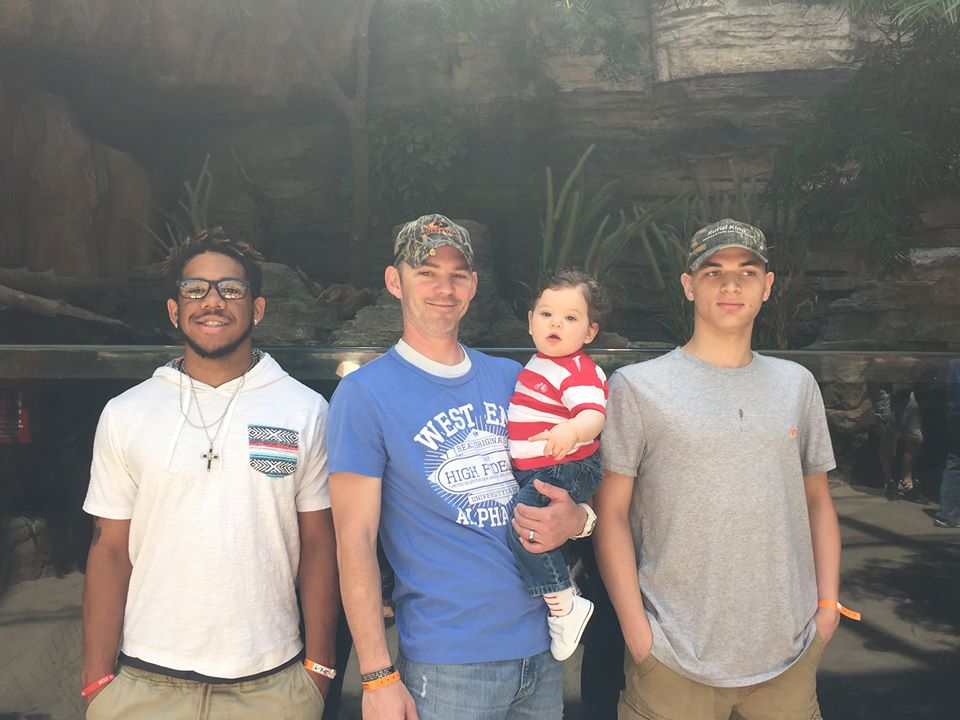

My name is Anthony Wilkins. I am currently 19 years old when writing this and am attending Parkland College online. I live with my step-mom and with my dad. I also have a sister at home as well as American Eskimo dog named Bear. My father works at PlastiPak while my mother works at Ideal Auto Sales in Matoon as the general manager for that particular building.
My birth mother is stationed in California, and I say stationed because she is in the Army. She is married to a a good man named Shiloh Holland and have a kid named Aiden Mark Holland, he is only 3 at the moment. My mom had a child with a late husband named Jovan -insert middle name here- Gasper Crowder. And he is black. Jovan is an MMA fighter, and is very happy with his choice, so much for being a lawyer.
In my free time I usually spend it alone, if I can help it. I don't really have that many friends, frankly I am pretty sure that I only have one at the moment. But that friend has introduced me to alot of new things I like to do. There are many animes that she has introduced me to. I haven't liked them all, but I don't want to hurt her feelings. She has shown me new RPG and several comics. I like to write in my freetime, though only when I can. The only thing I will tell you about my book is that it has ninjas which by definition "A ninja (忍者) or shinobi (忍び, "to sneak") was a covert agent or mercenary in feudal Japan." (wikipedia.com) Which are dumb! Samurai forever!
One thing I have been reading up on is some code books and websites. I have deduced that I literally know nothing about code. I dont know the difference between
Now I work at the must alustrious gas station called Casey's. Before I go on, here is one of our many slogans:
Casey's: A General Store and A Whole Lot More
Casey's: Famous For Pizza
Casey's: Famous For Fresh
I do not like these slogans at all. They are dumb and just aggravate me. But at my job I work from 10:00 a.m. to 5:00 p.m. I work in the kitchen making all the pizza and other food for the warmers. I also make the pizza dough, cut veggies, clean whatever thing is dirty, and make cookies or muffins when I need to.
I also did the truck, but at the moment I am not on the truck...so sad. I would help the girls, ther is only one other guy and he works at night, unload the truck and put away the freezer food that we use in the kitchen. I would also put away the drinks inside the cooler that we get.
Even when I am not doing the kitchen I am always working. I do not take any breaks at all, even though I am allowed to do so. I take the time to do the drink cooler. I will stock it with the drinks that we already have.